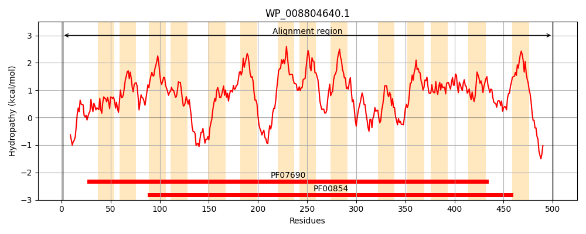
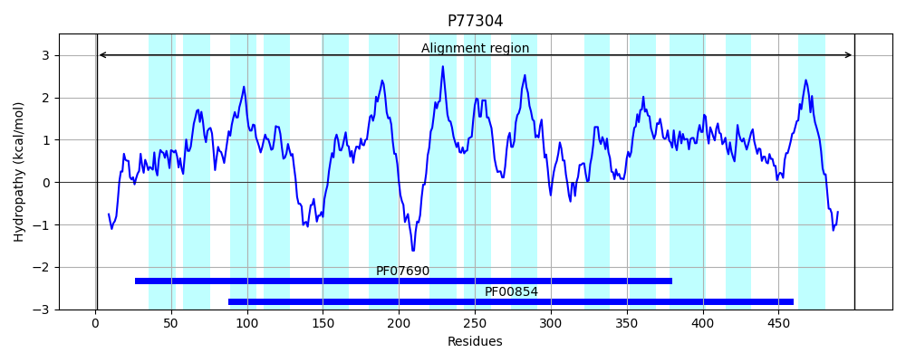
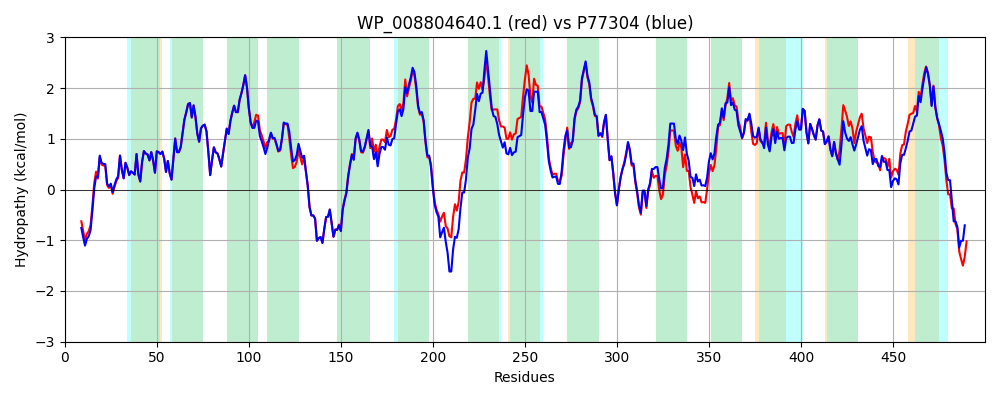

Hit Accession: P77304
Hit TCID: 2.A.17.1.2
Hit Description: gnl|BL_ORD_ID|11498 gnl|TC-DB|P77304|2.A.17.1.2 Tripeptide permease tppB - Escherichia coli (strain K12).
Mach Len: 500
e:0.000000
Query TMS Count : 14
Hit TMS Count: 14
TMS-Overlap Score: 12.250000
Predicted Substrates:CHEBI:5584;hydron, CHEBI:9742;tripeptide, CHEBI:4634;dipeptide, CHEBI:2255;7beta-aminocephalosporanic acid
BLAST Alignment:
Score: 2248 , Bit scores: 870 bits, E-value: 0.0e+00, Alignment length: 500, Percentage identity: 86
Query: 1 MSTANNKPAESVSLNAFKQPRAFYLIFSIELWERFGYYGLQGIMAVYLVKQLGMSEADSITLFSSFSALVYGLVAIGGWLGDKVLGTKRVIMLGAIVLAIGYALVAWSGHDAAIVYMGMATIAVGNGLFKANPSSLLSTCYDKNDPRLDGAFTMYYMSINIGSFFSMLATPWLAARFGWSVAFALSVVGMVITIINFAFCQKWVKQYGSKPDFAPVHMGKLLATIAGVVVLVAIATWLLHNQGIARMVLGVVALGIVVIFAKETIGLKGAARRKMIVAFLLMVEAIVFFVLYSQMPTSLNFFAIRNVEHSILGIAFEPEQYQALNPFWIMIGSPILAAIYNKMGDRLPMPHKFAIGMVLCSGAFLVLPLGAKFASDAGIVSVNWLILSYALQSIGELMISGLGLAMVAQLVPQRLMGFIMGSWFLTTAGAAIIAGKIANLMAVPENVTDPLVSLEVYGHVFLQIGIVTAVIAALMLLTAPKLNRMTQDDSADLKARETAA 500
MSTAN KP ESVSLNAFKQP+AFYLIFSIELWERFGYYGLQGIMAVYLVKQLGMSEADSITLFSSFSALVYGLVAIGGWLGDKVLGTKRVIMLGAIVLAIGYALVAWSGHDA IVYMGMA IAVGNGLFKANPSSLLSTCY+KNDPRLDGAFTMYYMS+NIGSFFSM+ATPWLAA++GWSVAFALSVVG++ITI+NFAFCQ+WVKQYGSKPDF P++ LL TI GVV L+AIATWLLHNQ +ARM LGVVA GIVVIF KE +KGAARRKMIVAF+LM+EAI+FFVLYSQMPTSLNFFAIRNVEHSILG+A EPEQYQALNPFWI+IGSPILAAIYNKMGD LPMP KFAIGMV+CSGAFL+LPLGAKFASDAGIVSV+WL+ SY LQSIGELMISGLGLAMVAQLVPQRLMGFIMGSWFLTTAGA +I G +A +MAVP+NVTDPL+SLEVYG VFLQIG+ TAVIA LMLLTAPKL+RMTQDD+AD A+ A
Sbjct: 1 MSTANQKPTESVSLNAFKQPKAFYLIFSIELWERFGYYGLQGIMAVYLVKQLGMSEADSITLFSSFSALVYGLVAIGGWLGDKVLGTKRVIMLGAIVLAIGYALVAWSGHDAGIVYMGMAAIAVGNGLFKANPSSLLSTCYEKNDPRLDGAFTMYYMSVNIGSFFSMIATPWLAAKYGWSVAFALSVVGLLITIVNFAFCQRWVKQYGSKPDFEPINYRNLLLTIIGVVALIAIATWLLHNQEVARMALGVVAFGIVVIFGKEAFAMKGAARRKMIVAFILMLEAIIFFVLYSQMPTSLNFFAIRNVEHSILGLAVEPEQYQALNPFWIIIGSPILAAIYNKMGDTLPMPTKFAIGMVMCSGAFLILPLGAKFASDAGIVSVSWLVASYGLQSIGELMISGLGLAMVAQLVPQRLMGFIMGSWFLTTAGANLIGGYVAGMMAVPDNVTDPLMSLEVYGRVFLQIGVATAVIAVLMLLTAPKLHRMTQDDAADKAAKAAVA 500 | Protein Hydropathy Plots: |
|---|
|  |  |
Pairwise Alignment-Hydropathy Plot:
|
|---|
|  |